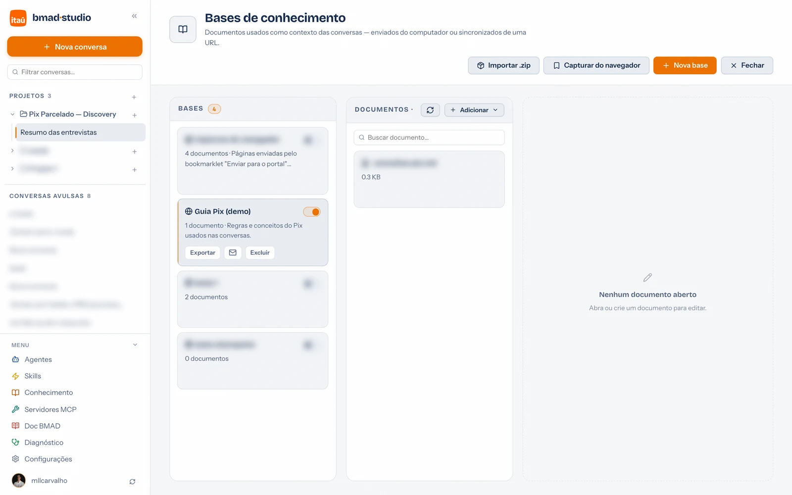

Guia de uso · 07
Bases de conhecimento
Documentos que entram como contexto permanente das conversas — normas, guias, glossários, decisões. A diferença para os arquivos do projeto: a base é referência estável que vale em muitas conversas; o arquivo do projeto é material de trabalho daquele projeto.

Como criar uma base
- Menu da sidebar → Conhecimento → + Nova base.
- Nome e descrição — a descrição ajuda o time (e o assistente) a saber o que tem dentro.
- Escopo — Global vale em todas as conversas; Projeto só nas daquele projeto.
- O toggle liga/desliga a base: habilitada, ela entra no contexto das conversas do escopo.
Adicionar documentos — quatro caminhos
- Do computador — botão Adicionar na coluna de documentos. Office e PDF são convertidos em texto automaticamente.
- A partir de URL… — cole o link e a página vira markdown. O documento guarda a URL de origem e pode ser re-sincronizado depois (ícone 🗘 — um documento ou a base inteira). Ideal para páginas de intranet e GitHub Pages que mudam.
- Capturar do navegador — o botão instala um bookmarklet: em qualquer página aberta e autenticada no seu navegador (SharePoint, Confluence, intranet), clique nele e a página vai para a base — sem configurar credencial nenhuma.
- SharePoint via login Microsoft — com o app do Entra ID configurado (Configurações → Microsoft), URLs de SharePoint são lidas direto pelo Graph, com re-sincronização.
Como o assistente usa
- Bases habilitadas entram no contexto das conversas do escopo — as vinculadas a um agente entram nas conversas dele mesmo com o toggle desligado.
- Quando as bases são grandes demais para injetar inteiras, o assistente recebe um índice e busca sob demanda (
portal_search_knowledge) antes de responder — em qualquer modo, inclusive Ask. - Dá para editar qualquer documento na própria página (editor markdown) e mover documentos entre bases.
Base habilitada consome contexto em toda mensagem. Prefira documentos
objetivos e desligue bases que não estão em uso — ligar de novo é um clique.
Exportar, enviar por e-mail e importar
- Exportar — baixa a base inteira como
.zip(todos os documentos). - Enviar por e-mail (ícone ✉️ no card da base) — abre o cliente de e-mail com o
.zipjá anexado. Sem cliente com anexo automático, o portal salva o arquivo e abre a pasta para anexar no rascunho. - Importar .zip — no topo da página; escolha nome e escopo na importação. Reimportar atualiza a base existente em vez de duplicar.
Padrão de time: uma base "oficial" por assunto (ex.: "Normas Pix"), mantida por uma
pessoa e distribuída por e-mail — todo mundo importa e conversa com as mesmas referências.